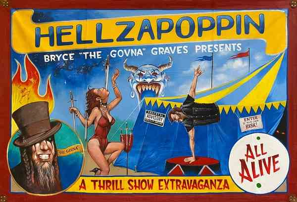

3,000+ SHOWS
A lifetime of touring, independent promotion, and live performances.
Independent artists, extraordinary acts, and an underground culture worth keeping alive.

Step into the unknown with Hellzapoppin, an independent troupe at the intersection of underground circus and sideshow.
The artists have built a touring show through self-promotion, independent production, and years on the road. Their work brings traditional sideshow craft into theaters, music venues, festivals, and big tops.
Along the way, Hellzapoppin has appeared alongside artists including Mudvayne, Static-X, Black Label Society, Avatar, In This Moment, and Mushroomhead. The company continues to champion independent performers and keep circus and sideshow in front of new audiences.
Join Hellzapoppin in celebrating the unusual, preserving a living performance tradition, and making room for the extraordinary.
Credits listed by Hellzapoppin include Travel Channel, Discovery Channel, FOX, Epiphone Guitars television commercials, and NASCAR appearances with Tony Stewart.
Hellzapoppin artists are featured in Ripley's Believe It or Not! Level Up! An autographed edition is available through the official merchandise shop.
FIND THE SIGNED BOOK ↗A lifetime of touring, independent promotion, and live performances.
A homegrown sideshow that has crossed borders to find its audience.
Keeping the traditions of circus and sideshow in front of a new generation.